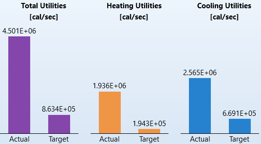
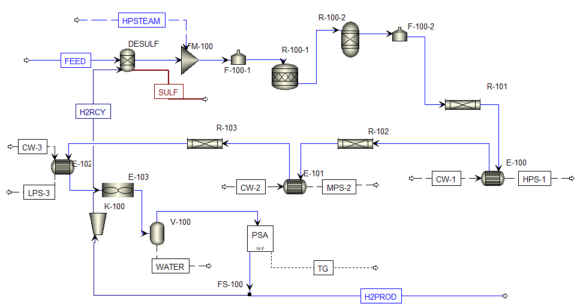

M.Eng. Design Project (CHE654) · 2026 · In progress
Hydrogen plant by steam methane reforming
A plant that turns natural gas and steam into about 213 tonnes of high-purity hydrogen a day. I'm building it in Aspen Plus, from reaction kinetics and heat integration through equipment sizing and costing.
- Hydrogen product
- 8,889 kg/h (≈213 t/day)
- Purity after PSA
- 99.99 mol% H₂
- Steam-to-carbon
- 2.5
- Steam raised
- 154 t/h (HP, MP, LP)
From the optimized Aspen Plus flowsheet (October 2026).
What I'm doing
- Built the Aspen Plus flowsheet with kinetics from the literature for the reformer and the high- and low-temperature shift reactors.
- Ran a pinch analysis in Aspen Energy Analyzer to set utility targets and guide heat recovery.
- Sized the reactors, fired heaters, heat exchangers and PSA beds, and costed the plant in Aspen Process Economic Analyzer.
- Oversaw a teammate's price comparison of Thai natural-gas sources (Gulf, Myanmar, LNG and pool gas) for the feed.
How the plant works
The feed is cleaned, reformed with steam at 900 °C, then shifted to turn carbon monoxide into more hydrogen. The hot gas raises steam at three pressure levels on its way down to 40 °C, and a pressure-swing adsorption unit separates the hydrogen. The two shift reactors cut carbon monoxide from 27.0 to 2.5 t/h.
| Unit | What it does | Conditions |
|---|---|---|
| D-100 | Desulfurizer, two beds. Removes H₂S that would poison the catalysts. | 370 °C, 30 bar |
| F-100-0/1/2 | Fired heaters that preheat the feed between steps | to 370, 500 and 620 °C |
| R-100 | Pre-reformer. Breaks down ethane and heavier hydrocarbons. | 500 → 442 °C |
| R-101 | Primary steam reformer | 620 → 900 °C |
| E-100 | Waste-heat boiler, high-pressure steam (95.7 t/h) | 900 → 350 °C, 39 bar steam |
| R-102 | High-temperature shift | 350 → 434 °C |
| E-101 | Medium-pressure steam (32.9 t/h) | 434 → 200 °C, 8.8 bar steam |
| R-103 | Low-temperature shift | 200 → 233 °C |
| E-102 | Low-pressure steam (25.6 t/h) | 233 → 134 °C, 2.3 bar steam |
| E-103 | Air cooler, four bays | 134 → 40 °C |
| V-100 | Knock-out drum that removes condensed water | 40 °C, 26 bar |
| PSA | Pressure-swing adsorption, five beds | 99.99 mol% H₂ at 24 bar |
| K-100 | Compressor that recycles a little hydrogen to the desulfurizer | 24 → 30 bar |
Cost and payback
- Equipment cost
- $11.1M
- Installed cost
- $16.2M
- Total capital cost
- $36.8M
- Product sales
- $149.6M / yr
- Operating cost
- $81.1M / yr
- Payout period
- 2.7 years
From Aspen Process Economic Analyzer, at a 20% required rate of return. Operating cost includes $63.9M/yr of raw materials and $9.2M/yr of utilities. The fired heaters are the most expensive items, together about $7.0M of the $11.1M equipment cost.
Energy saved by heat integration
15.2 MW
less utility use is possible with full heat recovery: 81% below what the flowsheet used. Heating alone could drop by 90%.
Aspen Energy Analyzer compares the heating and cooling a flowsheet uses ("actual") with the minimum a fully heat-integrated plant would need ("target"). The gap is heat that could be recovered between process streams instead of being bought as steam or thrown away to cooling water. Values converted from Aspen's cal/s output.
These targets are from the September design stage, before the plant was scaled up to its current capacity.

Flowsheet
